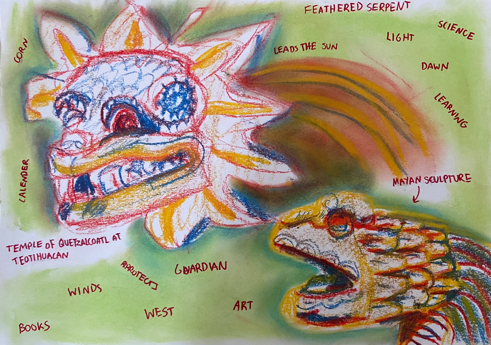

Being born into the Uyghur diaspora, identity and culture has become detached and distant within my mind. This internal and external conflict throughout my life is what I use to develop my paintings and ideas. My art is a process of understanding this journey of my identity through faded memories that seem faraway and myth-like.

“Memories of Sand and Dust” is an ongoing project based on my trip to Cappadocia, Turkey in 2017. These volcanic structures and arid landscapes appear both otherworldly and familiar to me – bearing somewhat of an association to the surroundings of my Mother’s hometown in Turpan, China. At the same time, Cappadocia obtains its own unique charm, where the carved mounds create a mesmerising atmosphere.
“What Becomes a Myth?”, embodies my fascination of mythological stories and creatures and their visual representations. It is an ongoing project exploring the history of myths from various cultures as well as asking myself the question: what will soon be considered a myth today? Expect an amalgamation of magical, real and forgotten creatures and stories appearing in this space!

"What Becomes a Myth? - "Quetzalcoatl""